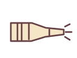

返回硬件项目索引
返回硬件项目索引H09 / 硬件团队 · 实体展示
Typhoon Capsule 飓风胶囊
把一阵风装进“胶囊”，能做什么？
Typhoon Capsule 飓风胶囊是一台便携式模块化吹吸工具：接上尘杯与滤芯，它能收集桌面碎屑；换上气嘴，它能低压充气、抽走收纳袋里的空气。
从重新设计保护板、点焊电池包，到修改漏风中框，飓风胶囊在一次次返工中成形。它的另一半，是一个让建模新手也能参与创造的参数化网页。选择模板、调整尺寸、预览形状，再导出模型进行3D打印，就能尝试为自己的需求制作附件。 它也留下一个开放的邀请：下一种用途，由你来定义。
